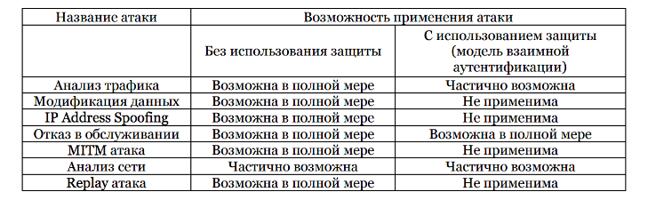

Сергеева Анастасия
|
|
автоматизированный дом с централизованным управлением
...
...
[ПОСЛЕДСТВИЯ] Нарушение работы, либо выход из строя центрального сервера и всей системы. Нарушение конфиденциальности, целостности и доступности информации
[ПОСЛЕДСТВИЯ] Сбои в ПО системы, а следовательно нарушение работы либо вывод из строя аппаратуры системы. Нарушение конфиденциальности, целостности и доступности информации
[ПОСЛЕДСТВИЯ] Нарушение конфиденциальности информации передаваемой по каналу. Возможен захват управления системой
[ПОСЛЕДСТВИЯ] Нарушение конфиденциальности информации, находящейся внутри сети
[ПОСЛЕДСТВИЯ] Нарушение конфиденциальности информации, находящейся внутри сети
[ПОСЛЕДСТВИЯ] Нарушение конфиденциальности, целостности и доступности информации. Возможны сбои в системе из-за неправильного использования оборудования
[ПОСЛЕДСТВИЯ] Нарушение конфиденциальности, целостности и доступности информации
[ПОСЛЕДСТВИЯ] Нарушение конфиденциальности, целостности и доступности информации
Вредоносный код
подключение заражённого устройства
заражение устройств в сети
Сбой устройства
неверные данные датчиков
ошибочные команды
Ошибка конфигурирования
неверное поведение системы
сбои в режимах работы
Проработка моделей и методов контроля доступа
Искусственна нейросеть, анализирующая состояние системы (аномальное или обычное)
Изолированная локальная сеть (удаленный доступ? получение информации из сети?)
Использование дополнительных шлюзов для соединения с сетью, шифрование данных, надежные пароли (отпечатки пальцев и тд)
Бэкапы и резервирование данных (страховка)
Тестирование и предугадывание возможных состояний системы УД, моделирование отказов и ошибок, обработка каждого из состояний